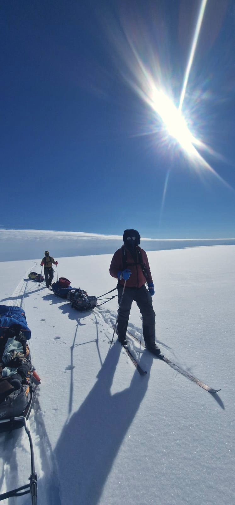

69°42′N / 2024The Greenland Ice Sheet
Man-hauling east to west across the ice cap. Two people, two pulks, everything needed for three weeks dragged behind them. No resupply, no snowmobile, no way off the ice except forward. The days were identical and that was the hardest part of it.
Read the account →